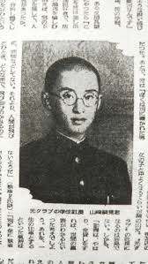

明と光クラブと11月25日と自殺と私
私は例年通り11月25日に近くなっていくと体調が地獄の様に悪くなる。毎年の様に超高熱が出たり、幻覚が見えたり、機械という機械が誤作動したり、理由不明な拒まれ方をそこらじゅうでしたりしてとんでもない目に遭う。
私は光クラブの山崎晃嗣の曾姪孫にあたる。彼の実の妹の直系で、彼の自殺の後に妹は結婚したので、結婚相手は彼の自殺や事件を知っていて結婚した家の男性だ。つまりは、事件を知っていて祖母を妻にはできなくなった人達がたくさんいた。山崎晃嗣が事件になったり自殺したりしなかったならば、私は生まれなかった人だ。彼が自殺をしなかったら、祖父は祖母と結婚していないと思う。
今年は日本にいないので、何とかマシな時間になったらいいなという淡い期待を持っていた。
私の従兄を思わせるスウェーデン人の優しい内科のお医者さんが私を心配して入院させ、病院からもらった薬があるので今年は入院以降はかなり気分も落ち着いていて、体調もほとんど何も問題がないみたいだ。
やっぱり例年通りな事もかなりあるのだけど、迎え撃つ私が薬によって落ち着いている。
毎年、26日以降になるとケロっとしてすっと付き物が落ちた様に痛み自体は忘れる。満身創痍を引きずった状態で。
病院のドクターは5歳の頃のBFを思い出させたし、事務担当のナースは従弟に似ていると思った。妹に似たナースが担当になった時には彼女は妹にそっくりな温度で私に近付きたさと反感を同時に見せた。
明さんは戦時中に食あたりが激化して死にかけた事があったが兄弟が血を文字通りに分けて救われた事がある。明さんの兄弟達は全員が医者だ。私が医者に救われる事は、明さんの自殺前をやり直して正しいルートに導いているみたいだ。最後の自殺前の葛藤を私が毎年毎年やって、正解が出せるまで続くのかもしれない。
今年はまず日本にいない事によってマシになるだろうと思っていた。北欧は北欧でいろんなカルマが土地や血筋にあって、私は簡単に似た様なカルマにぶつかってしまって、何というか土地に"みつかってしまった"。感覚的な表現で申し訳ないけれど、そうとしか言えない。
11月には毎年、私は誰からも、天上天下万物から拒まれているという感覚がありしかもそれが苦しい。凄く苦しい。そうして、家族がこの世に誰一人いない、置き去りにされた感覚。全てに拒まれ、家族は1人もいない感覚。そうして、お金がない感覚。お金がない事で誰からも見下されて捨てられている感覚。簡単にいうとすごい絶望感。これ以上生きて、最低最悪の輩達の手に堕ちるよりは、自分の手で綺麗に始末をつけてしまった方が心地いいかもしれないという直観。
心は毎年そうなる。クリスマスの温かさ…クリスチャンの隣人愛…に必死にしがみつく。明さんの母親はクリスチャンで毎食前に祈りを捧げていた。それもあるのかもしれない。
頭では分かっている。これはただの気分だという事を。11月25日が近付いたからといって、自分の価値が急激に変動する事なんかありえないことを。だけど自分の価値の全てが感じられなくなって行く。
機械の誤作動も凄くなる。改札機が私を締め出し始める。券売機が“料金が不足しています"と毎回毎回言うようになる。ほんとうには足りているのに！
今年はじゃあどうなの？というと、お医者さんに出会って大学病院に入院し始めてからかなり急に楽になった。その前まではトラブルの量も質も、海外にいても例年に近かった。それでもだいぶマシだったけど。
従兄の心配が縁を呼び寄せてくれたのかな、とか思うと、家族の全てから見捨てられたとか天上天下が拒んでいるとか考えるのはしっかりちゃんと難しくなる。
11月7日か8日には"俺だって死にたくなかった"と思って少し泣いた。病室の前の1人掛けの緑のソファの中で。妹に似たナースが話しかけにきてその顔を観てしまった。
 ← Back to Blog